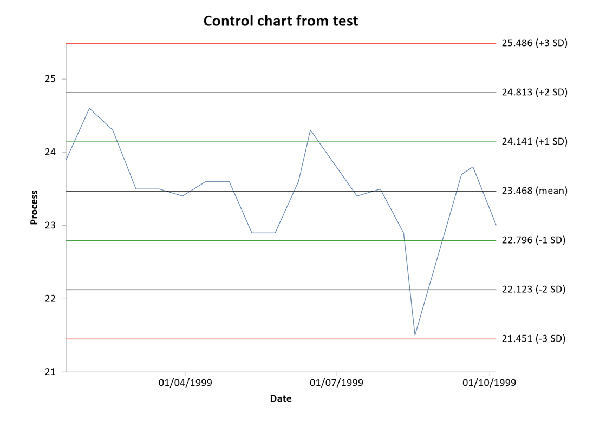

Control Chart
Menu location: Graphics_Control.
This plots the values of a process indicator over time (or some other sequence variable), and shows the variation within specified bands.
The bands shown on a control plot are often called control limits and warning limits, denoting the type of action to be taken if values lie beyond them. A common application is the monitoring of laboratory processes, in which the warning limits are usually taken as two standard deviations (SD) either side of the mean and the control limits are three standard deviations either side of the mean (Mortimer, 1994, 1999).
StatsDirect offers the following options for control plot bands:
- Optional display of mean (black), 1 SD (green), 2 SD (black) and 3 SD (red) - [Default is all].
- Mean and SD calculated from all process data - [Default].
- Mean and SD calculated from the first k observations in the process data - [You specify k, for example basing the control standard on the first six months of operation when strict validation was performed].
- Mean and SD specified - [Marked as 'external' on plot].
- Control (red) and warning (black) limits specified - [Marked as 'external' on plot].
If your time/sequence data are dates then the x axis is labelled at regular calendar intervals chosen to suit the span of the data (minutes, hours, days, weeks, months, quarters, years or decades), using the short date or time format that is set in your Windows installation.

Example
Test workbook (Graphics worksheet: Process, Date).
The chart above plots the values of a process indicator recorded on 19 dates between 19 January and 5 October 1999, mostly at fortnightly intervals.
To draw it in StatsDirect open the test workbook using the file open function of the file menu. Then select Control from the Graphics menu. Select the column marked "Process" when prompted for the Y (process) axis data and the column marked "Date" for the X (sequence) axis data, then accept the default chart options (all four bands, with the mean and SD calculated from all of the process data).
For this example:
Mean = 23.468421
SD = 0.672518
n = 19
The bands, as labelled at the right of the chart to 3 decimal places:
23.468 (mean)
24.141 (+1 SD)
22.796 (-1 SD)
24.813 (+2 SD)
22.123 (-2 SD)
25.486 (+3 SD)
21.451 (-3 SD)
All of the values lie within the 3 SD control limits. The value of 21.5 recorded on 17 August 1999 lies below the 2 SD warning limit of 22.123, which under the laboratory convention above would prompt a check of the process; the other 18 values lie within 2 SD of the mean, three of them beyond 1 SD.
 R code
R code
This R code reproduces the illustration above. It needs no packages and was checked with R 4.6.1. Paste it into R, or save it as a script and run it.
# Control chart: the StatsDirect help illustration (a process indicator recorded on
# 19 dates in 1999; the test workbook's Graphics worksheet columns Process and Date)
# in R
process <- c(23.9, 24.6, 24.3, 23.5, 23.5, 23.4, 23.6, 23.6, 22.9, 22.9, 23.6, 24.3,
23.4, 23.5, 22.9, 21.5, 23.7, 23.8, 23.0)
date <- as.Date(c("1999-01-19", "1999-02-02", "1999-02-16", "1999-03-02", "1999-03-16",
"1999-03-30", "1999-04-13", "1999-04-27", "1999-05-11", "1999-05-25",
"1999-06-08", "1999-06-15", "1999-07-13", "1999-07-27", "1999-08-10",
"1999-08-17", "1999-09-14", "1999-09-21", "1999-10-05"))
# The bands are the mean and 1, 2 and 3 standard deviations either side of it, with
# the mean and sd calculated from all of the process data (StatsDirect's default
# option); sd() divides by n - 1, as StatsDirect does.
m <- mean(process)
s <- sd(process)
six <- function(x) formatC(x, digits = 6, format = "f", drop0trailing = TRUE)
cat("Mean =", six(m), " SD =", six(s), " n =", length(process), "\n")
# The labels StatsDirect writes at the right hand end of each band, to its default
# 3 decimal places
k <- c(0, 1, -1, 2, -2, 3, -3)
band <- m + k * s
label <- paste0(formatC(band, digits = 3, format = "f", drop0trailing = TRUE), " (",
c("mean", "+1 SD", "-1 SD", "+2 SD", "-2 SD", "+3 SD", "-3 SD"), ")")
cat(label, sep = "\n")
# The chart: the process values joined in date order, with the mean (black), 1 SD
# (green), 2 SD (black) and 3 SD (red) bands labelled beyond the right end of the
# axis. StatsDirect labels the date axis at calendar intervals to suit the span of
# the data, here the quarters that fall within it.
op <- par(mar = c(5, 4, 4, 7))
plot(date, process, type = "l", col = "steelblue", xaxt = "n", xlab = "Date",
ylab = "Process", main = "Control chart", ylim = range(process, band))
axis.Date(1, at = seq(as.Date("1999-04-01"), by = "quarter", length.out = 3),
format = "%d/%m/%Y")
abline(h = band, col = c("black", "green", "green", "black", "black", "red", "red"))
text(par("usr")[2], band, label, pos = 4, xpd = NA, cex = 0.8)
par(op)